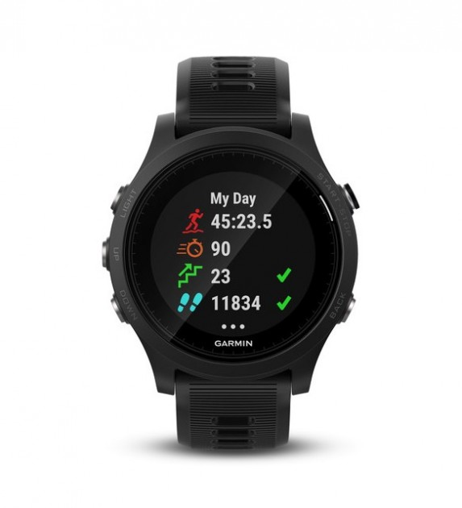
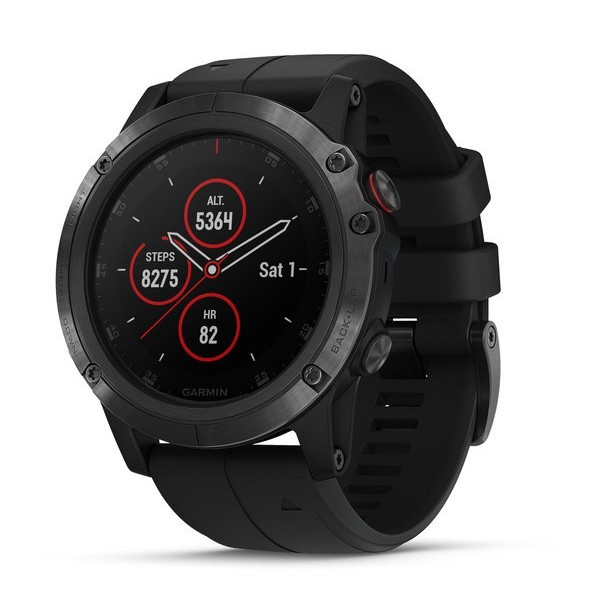

Last Updated:
5 Best Hiking Watches For The Outdoor Adventurer
Best Choice

Garmin Forerunner 935
Check Price On Amazon
Premium Pick

Garmin Fenix 5X Plus Sapphire
Check Price On Amazon
Featured

Demoto Spartan Trainer Wrist HR
Check Price On Amazon